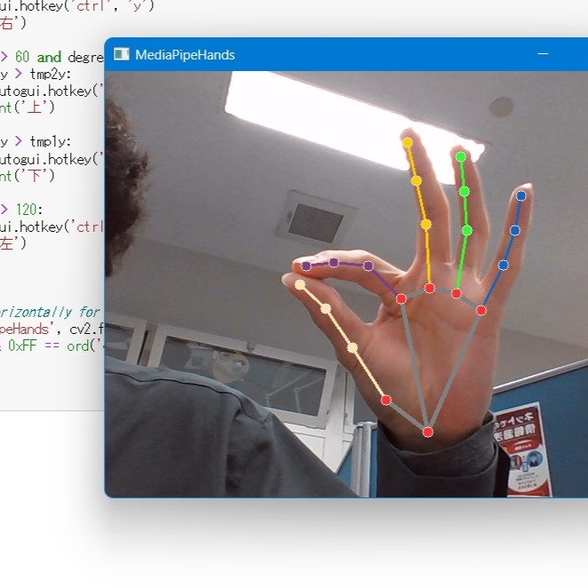

Pythonに慣れるための練習にもなりそう。結構簡単にすごい機能のプログラムが作れちゃいます。
プログラムの概要
親指と人差しで空中をつまみ、移動して指を離す動作でなんらかの処理を実行させるというプログラムです。今回のプログラムではPyAutoGUIのキーボード操作で、四方に動く指に合わせて４パターンのWindowsのショートカットキーが処理されます。
環境
AnacondaのJupyter Notebookを開発環境としましたが、その必要がどこまであるのかよくわかってません。強いていうならJupyter Notebookはインタプリタ型の対話形式なので、逐一コードを確認することができます。とりあえずPythonを実行できるとよいですが、注意点として、Google ColaboratoryとMediaPipeの組み合わせは少なくとも筆者は確認していません(できたらいいな)。とりあえずAnacondaをインストールし、以下のコードをAnaconda Powershell Prompt に入力します。 conda create -n mediapipe
conda activate mediapipe
pip install mediapipe インストールができれば、どこかにJupyter Notebookがあり、そこから実際にプログラムを書くためのファイルを作ります。
ファイル名は適当で問題ありません。
コードの説明
MediaPipeのインストールができれば、さっそくJupyter Notebookでコーディングします。あとでソースコードを貼りますが、すべて一行のセルに入力して大丈夫です。 ライブラリをインポート import pyautoguiimport cv2
import mediapipe as mp
import math
import numpy as np ライブラリをインポートするとあらかじめ用意された便利なプログラムを呼び出すことができます。 角度を求めるための関数の定義
def degree(x0, y0, x1, y1, x2, y2):
vec1=[x1-x0, y1-y0]
vec2=[x2-x0, y2-y0]
abserve1=np.linalg.norm(vec1)
abserve2=np.linalg.norm(vec2)
inner=np.inner(vec1,vec2)
cos_theta=inner/(abserve1*abserve2)
theta=math.degrees(math.acos(cos_theta))
deg = round(theta,2)
return deg
degreeが関数名になります。()内に6つの変数を入れると、それらがx0からy2に対応して角度(0-180°)が計算されます。ここで入力される変数は手のランドマーク、つまり手の関節に与えられた点の座標になります。defから下の行はインデントが必要なので要注意です。
リアルタイムで手を認識
MediaPipeの公式サイトからコードを引っ張ってきます（割愛） コードの大意としては、ウェブカメラから映像が入力される間、そこで取得した画像を一コマずつOpenCVで加工し、それをMediaPipeに読み込ませ、グラフを描画し出力するというものになっています。なおEscキーを押すとプログラムは停止します。
イベントハンドラ
ここからようやくオリジナルのコードになります。条件は親指と人差し指で空中をつまむ動作です。本来の方法は特定の手の形状を機械学習的なもので識別させるのかもしれませんが、そんな高度なことはできないので、親指先ー手首ー人差し指先の座標を取得し、この3点が作る角度の開閉をイベントの最初の条件にします。
そこからは早い話、以下のような流れになります。
ちなみにこの座標ではx,yは0-1で表現されます。
indX=hand_landmarks.landmark[8].x
indY=hand_landmarks.landmark[8].y
wriX=hand_landmarks.landmark[0].x
wriY=hand_landmarks.landmark[0].y
thuX=hand_landmarks.landmark[4].x
thuY=hand_landmarks.landmark[4].y
繰り返し処理(for)のなかで3点の座標、ind(人差し指)、wri(手首)、thu(親指)を取得します。
finger = 0tmp1x, tmp1y, tmp2x, tmp2y = 0, 0, 0, 0 繰り返し処理の外でフラグを宣言・初期化します。
degree1 = degree(wriX, wriY, thuX, thuY, indX, indY)
if finger == 0 or finger == 3 and degree1 > 25:
print('ready')
finger = 1
if finger == 1 and degree1 < 5:
print('catch')
tmp1x = (indX + thuX)/2
tmp1y = (indY + thuY)/2
finger = 2
if finger == 2 and degree1 > 10:
print('release')
tmp2x = (indX + thuX)/2
tmp2y = (indY + thuY)/2
degree2 = degree(tmp1x, tmp1y, 0, tmp1y, tmp2x, tmp2y)
if degree2 < 60:
pyautogui.hotkey('ctrl', 'y')
print('右')
if degree2 > 60 and degree2 < 120:
if tmp1y > tmp2y:
pyautogui.hotkey('ctrl', 'c')
print('上')
if tmp2y > tmp1y:
pyautogui.hotkey('ctrl', 'v')
print('下')
if degree2 > 120:
pyautogui.hotkey('ctrl', 'z')
print('左')
finger = 3
これはfor文内部で座標を取得したあとに書かれます。先に宣言したfingerは指の動作の行程を順序よく認識させるために用いられます。また、tmpみたいな変数はキャッチとリリース時に取得した座標を一時的に保管するためのものです。最初に定義した関数の計算の都合上、算出される角度は0から180までになっています。そのため、右方向は1-60°、上下方向は61-120°、左方向は121-180°という割り当てになり、角度だけでは上下は判別できません。苦し紛れの方策として、上下方向は角度に加えて、キャッチ時よりy座標が大きくなっているかどうかで上下の判別をします。
最後におまけ程度のpyauto.hotkey()を使います。引数にショートカットキーとして打ち込むキーを入力すればOKです。 ソースコード記載ページ